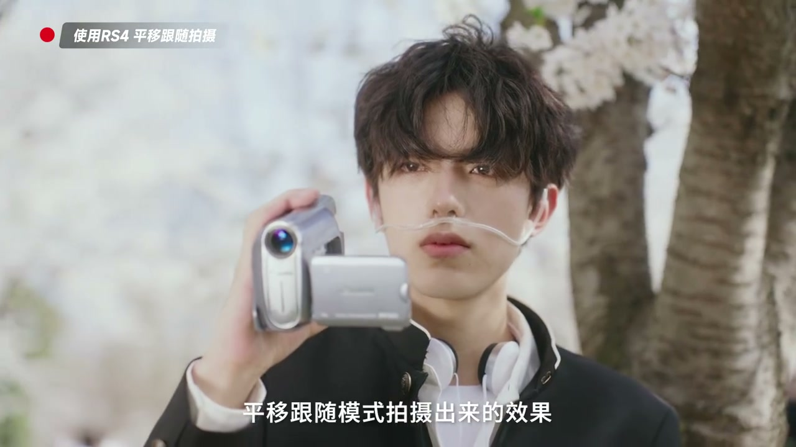

内容要点
[00:00] 看完這期視頻 教你分清穩定器兩大模式
[00:04] Hello 大家好 又是你們的瑞角
[00:06] 平移跟隨是大家最常用到的穩定器模式
[00:09] 在這個模式下 穩定器只會進行左右方向的平移移動
[00:14] 使用最多的場景就是環繞運鏡
[00:16] 也就是我們熟知的刷鍋
[00:18] 不管是小範圍的輕微環繞 還是環繞主體的整體運鏡
[00:22] 都可以用到PF的平移跟隨模式
[00:25] 這樣的運鏡更多的起到交代周圍環境的作用
[00:29] 展現出人物所在的場景內容
[00:31] 如果想要突出人物主體的環繞運鏡
[00:34] 也可以搭配長焦鏡頭進行拍攝
[00:36] 空間的壓縮感會更強
[00:39] 我用的70-200鏡頭加上機身大概不到2000克
[00:42] 一天的拍攝下來 承重也完全沒問題
[00:46] 和之前提到的鎖定模式不同
[00:48] 平移跟隨模式拍攝出來的效果
[00:50] 更多的是一個定點的橫向運鏡
[00:53] 比起鎖定模式可以展示更多的環境內容
[00:57] 如果畫面是運動狀態的展示
[00:59] 就用鎖定模式
[01:00] 如果畫面重點是周圍環境的展示
[01:03] 就選平移跟隨模式


